Freitag – Abflug München
6. Februar 2026Abflug München
Start der Reise mit Lufthansa LH 718 von München nach Seoul Incheon (ICN). Handgepäck optimieren – langer Tag mit Stopover.
Flug MUC → ICNNachtflug Richtung Seoul
Übernachtung im Flugzeug. Schlafmaske, Ohrstöpsel und Reisekissen mitnehmen.
LangstreckeSamstag – Seoul Stopover
7. Februar 2026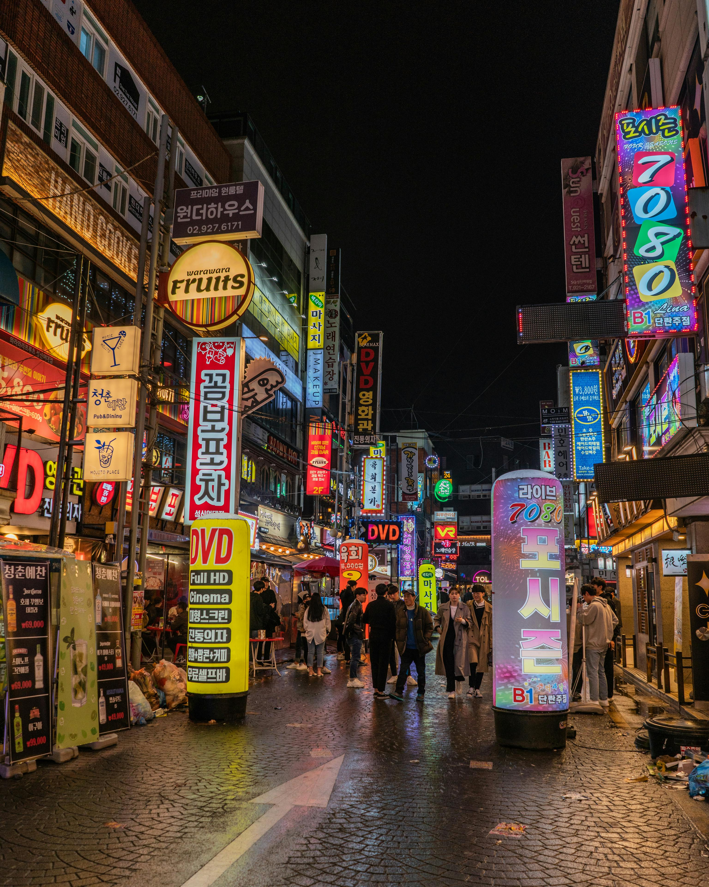
Ankunft Seoul Incheon
Ankunft am Terminal 2 mit Asiana Airlines. Immigration und Zoll – nur Handgepäck, kein Warten am Gepäckband.
Ankunft ICN T2AREX Express nach Seoul Station
Airport Railroad Express (AREX) vom Terminal 2 in die Stadt. Express: 43 Min, All-Stop: 53 Min für 4.750 KRW.
Zug AREX Info →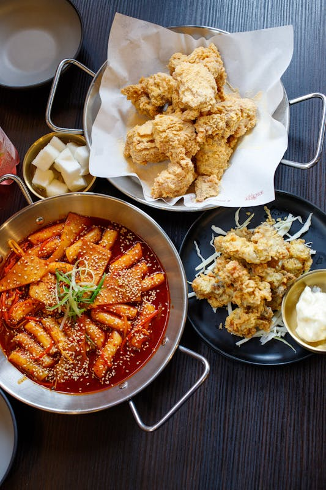
Street Food in Hongdae
Tteokbokki, Hotteok, Kimbap und mehr in Seouls trendigstem Viertel rund um die Hongik University.
Street Food HongdaeGebuchte Tour „Trendy Hub of Youth“
4-stündige Walking Tour durch Hongdae (Reservierung CT189820): Mural Street, Busking, K-Pop Shops, Mode und Cafés.
Tour CT189820Freizeit in Hongdae
Zeit für letzte Souvenirs, K-Beauty Shopping oder ein Café, bevor es zurück zum Flughafen geht.
FreizeitAbflug nach Guangzhou
Asiana OZ 355 von Seoul ICN nach Guangzhou (CAN). Flugzeit ca. 3 Stunden, Ankunft ~23:30 Uhr Ortszeit (GMT+8).
Flug ICN → CAN Flightradar24 →Sonntag bis Donnerstag – Guangzhou
8. – 12. Februar 2026Ankunft & Check-in Grand Hyatt
Landung in Guangzhou, Transfer zum Grand Hyatt Guangzhou in Zhujiang New Town. Check-in ab 14:00, Nachtankunft beachten.
Hotel Grand Hyatt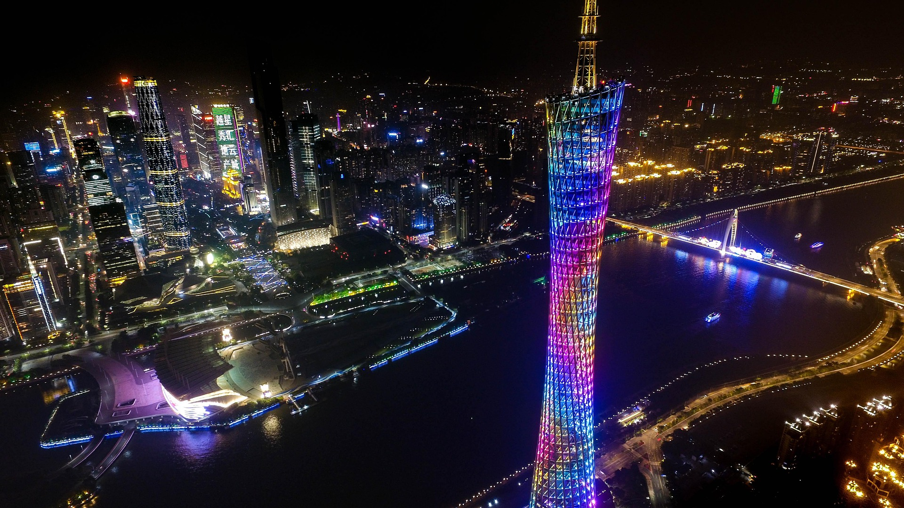
Canton Tower & Pearl River Cruise
600 m hohes Wahrzeichen der Stadt mit atemberaubendem Blick. Abends optionale 1-stündige Nachtfahrt auf dem Perlfluss ab Dashatou Wharf.
Sightseeing Night View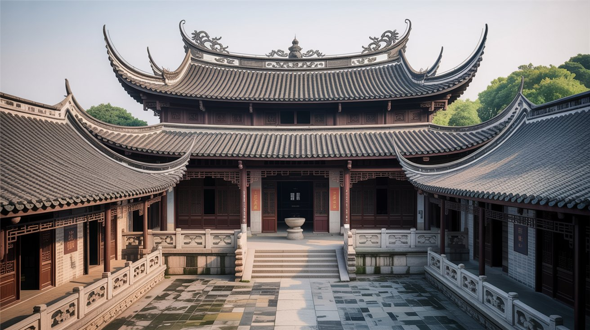
Chen Clan Hall, Shamian Island & Liwan Lake
Meisterwerke der Lingnan-Holzschnitzerei, koloniale Sandsteinbauten auf Shamian Island und traditionelle Gartenarchitektur am Liwan Lake.
Kultur Architektur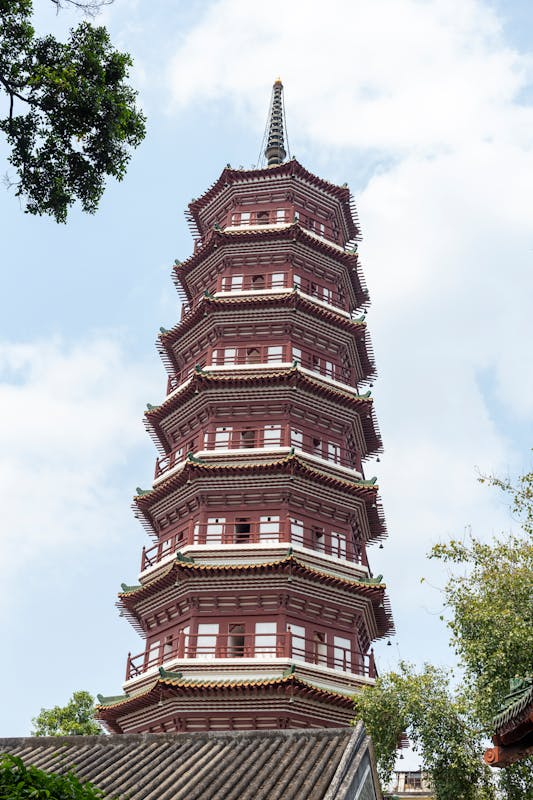
Temple of Six Banyan Trees & Beijing Road
Antike 57 m hohe Blumenpagode aus dem Jahr 537 n. Chr., danach Bummeln und Essen auf der Beijing Road.
Tempel Dim SumAbschiedsfrühstück & Zug nach Shenzhen
Letztes Dim Sum in Guangzhou, dann Hochgeschwindigkeitszug von Guangzhou South nach Shenzhen North/Futian (30–60 Min, 75–150 RMB).
Zug Chunyun beachtenDonnerstag bis Samstag – Shenzhen
12. – 14. Februar 2026Check-in InterContinental Shenzhen
Ankunft im Futian CBD, Check-in im InterContinental Shenzhen. Danach erster Bummel durch die Tech-Metropole.
Hotel Futian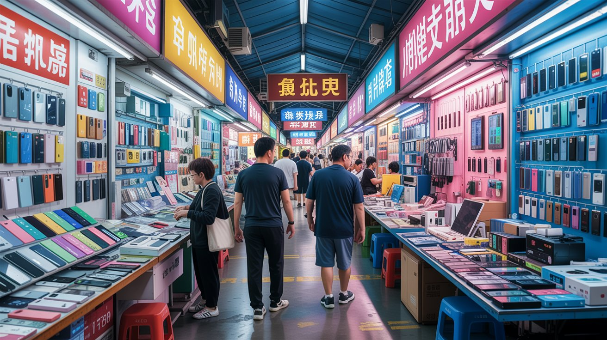
Huaqiangbei Electronics Market
Weltgrößter Elektronikmarkt: Gadgets, Komponenten, Drohnen-Zubehör. Ab 12 Uhr öffnen die meisten Händler.
Tech ShoppingDJI Store, Ping An Tower & OCT Loft
Weltgrößter DJI Flagship Store mit Flight-Simulator, Aussichtsplattform im 599 m hohen Ping An Finance Center, danach Street Art im OCT Loft Creative Park.
Drohnen Observation Deck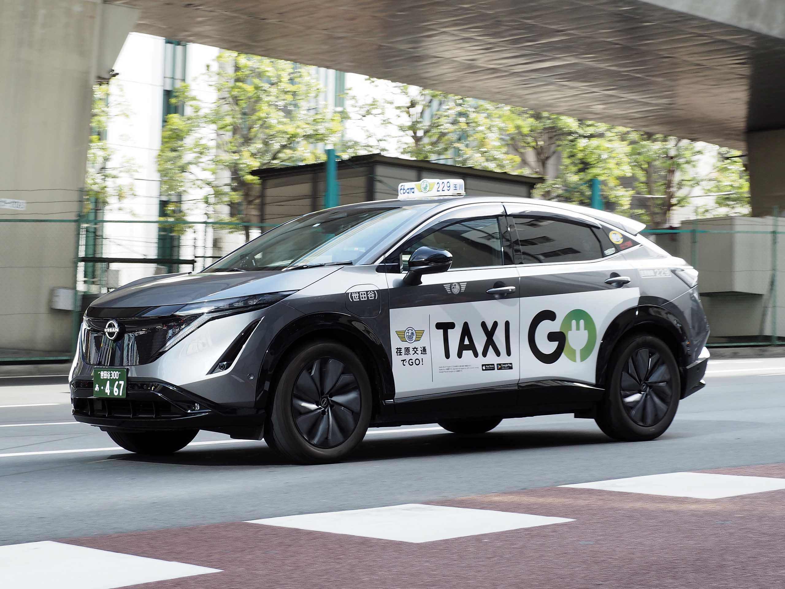
Shenzhen Museum, Robotaxi & Bay Park
Vormittags Shenzhen Museum (gratis), danach Testfahrt mit Pony.ai Robotaxi in Nanshan/Futian, Abschluss am Shenzhen Bay Park.
Autonomous NaturSonntag – Rückflug
15. Februar 2026Check-out & Transfer zum Flughafen
Letzte Vorbereitungen, Gepäck packen und Transfer zum Flughafen Shenzhen oder Guangzhou für den Heimflug.
TransferRückflug Shanghai → München
Verbindung über Shanghai zurück nach München. Bis zum nächsten Abenteuer!
Flug Goodbye ChinaUnterkünfte
Beide Hotels liegen zentral und bieten Infinity Pool sowie Premiumlage mit Blick auf die Stadt.
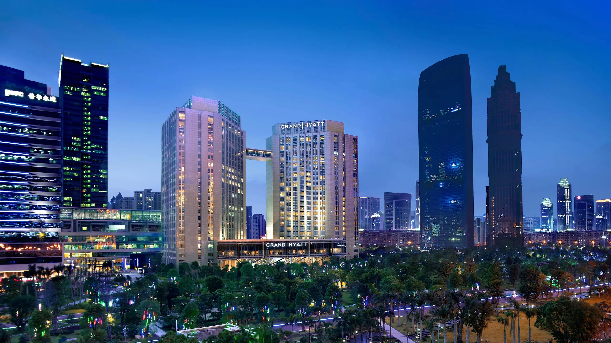
Grand Hyatt Guangzhou
Guangzhou · 5 Sterne · Zhujiang New Town
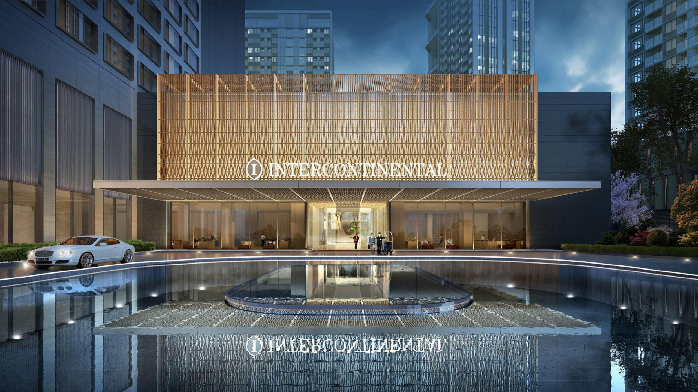
InterContinental Shenzhen
Shenzhen · 5 Sterne · Futian CBD
Restaurants & Kulinarik
Kantonesisches Dim Sum, Michelin-Sterne-Restaurants und lokale Institutionen in Guangzhou.
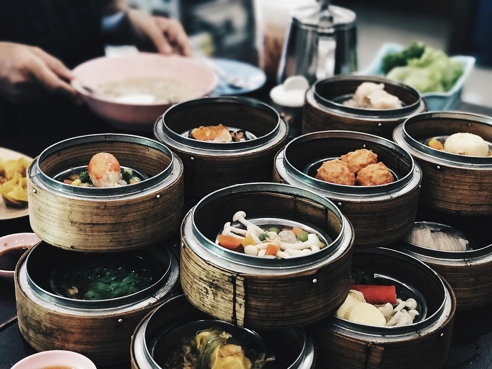
⭐ Bing Sheng Mansion
Guangzhou · Michelin-Stern · Fine Dining Dim Sum
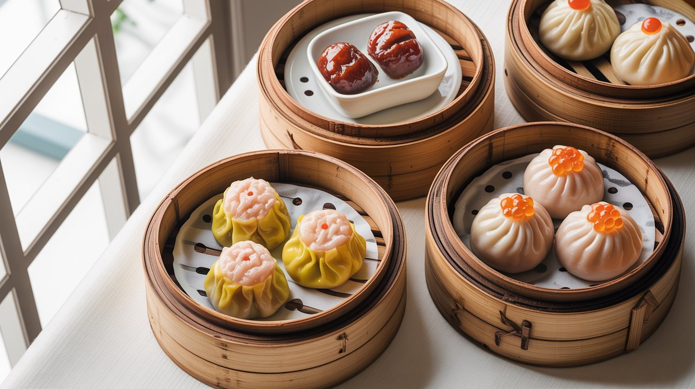
🏮 Tao Tao Ju
Guangzhou · Traditionell seit 1880
🥟 Dian Du De
Guangzhou · Dumpling-Spezialist seit den 1930ern
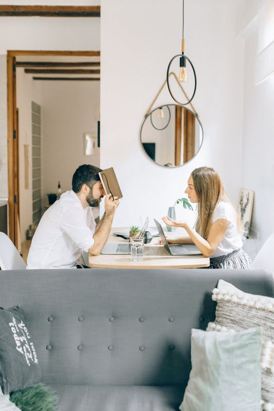
🏛️ Lian Xiang Lou
Guangzhou · Historisch seit 1889
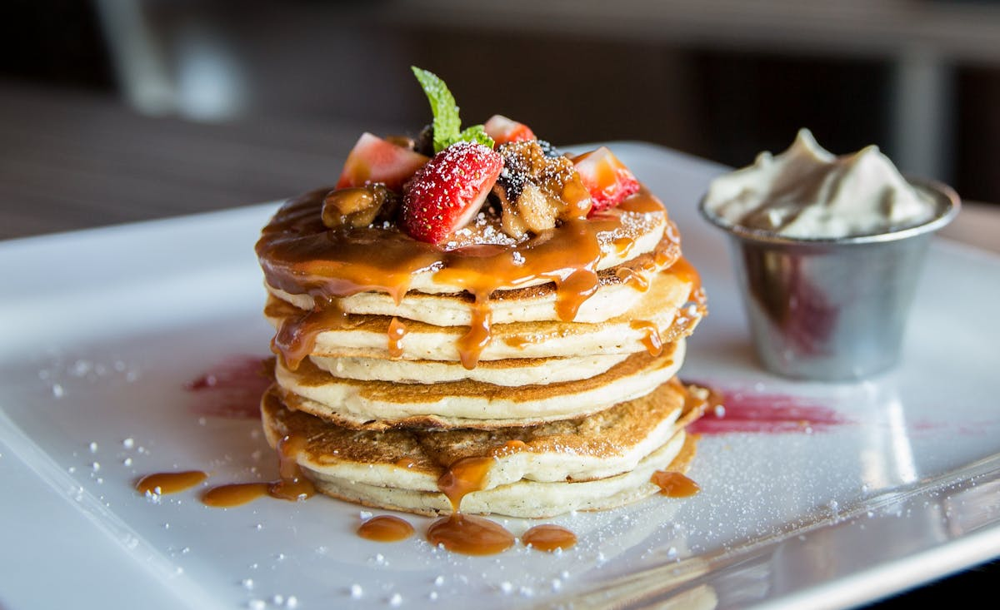
🏢 Guangzhou Restaurant
Guangzhou · Cantonese Classics
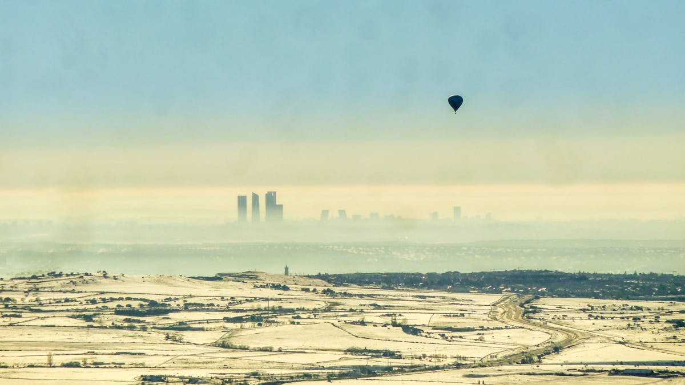
🌟 Xin Xuan
Guangzhou · Moderne kantonesische Küche
Praktisch & Vorbereitung
🧧 Chunyun-Warnung: 12. – 14. Februar 2026
Unsere Reise fällt mit der größten jährlichen Migration der Welt zusammen. Züge, U-Bahnen und Restaurants sind extrem überfüllt. Frühzeitig am Bahnhof sein (35–45 Min vor Abfahrt) und flexible Puffer einplanen.
Transport
Apps & Bezahlung
💳 Alipay (empfohlen)
Vor Abflug installieren, mit Reisepass verifizieren und Kreditkarte hinterlegen. 3% Gebühr ab 200 RMB. Verifizierung kann 1–2 Tage dauern.
Notfallnummern
Polizei
Notarzt
Feuerwehr
Österr. Botschaft
Wetter & Kleidung
🌡️ Februar-Wetter
Guangzhou & Shenzhen: 15–25 °C, mild, oft bewölkt, gelegentlich Regen.
Seoul: −5 bis 5 °C, kalt, möglicher Schnee.
Tipp: Leichte Jacke, Pullover, Regenschirm, bequeme Sneakers und Powerbank mitnehmen.
Reise-Checkliste
China-Visum beantragen
Rechtzeitig vor Abflug, ggf. Termin im Konsulat
Alipay einrichten & verifizieren
Kreditkarte vor Abflug hinzufügen, Verifizierung dauert 1–2 Tage
VPN / eSIM organisieren
LetsVPN oder Nomad eSIM für Google/WhatsApp/Instagram
Flüge checken & einchecken
LH 718, OZ 355, Rückflug – Sitzplätze reservieren
Zug Guangzhou ↔ Shenzhen buchen
Früh buchen wegen Chunyun-Periode
Bing Sheng Mansion reservieren
Michelin-Dim Sum – früh reservieren
DiDi App installieren
Englische Version, mit Alipay verknüpfen
Hotel-Adressen auf Chinesisch speichern
Für Taxifahrer und Notfälle als Screenshot
Reiseapotheke packen
Schmerzmittel, Desinfektion, persönliche Medikamente
Universal-Adapter & Powerbank
Typ A/C/I (220V), Powerbank für lange Tage